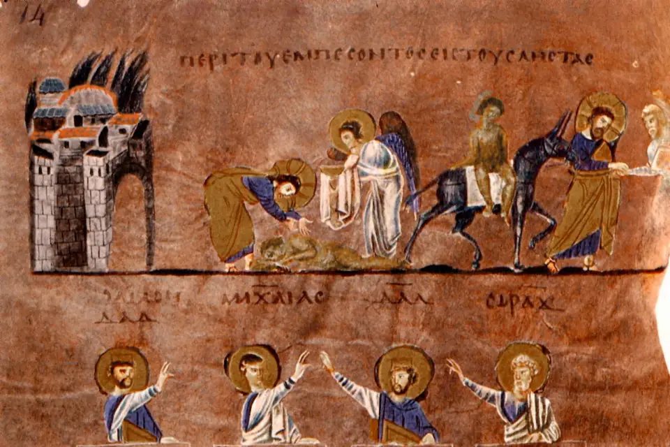
Amor ao próximo
Quem é o meu próximo?
Um especialista na lei quis uma definição. Jesus respondeu com uma história que ainda tira a gente do lugar.
2 de nov. de 2026 · 2 min de leitura
Ler artigoBlog da Igreja Kemuel
Porque o Senhor dá a sabedoria, e da sua boca vem o conhecimento e o entendimento.
Busque por tema, personagem ou passagem.
15 artigos
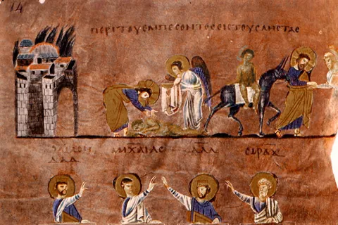
Amor ao próximo
Um especialista na lei quis uma definição. Jesus respondeu com uma história que ainda tira a gente do lugar.
2 de nov. de 2026 · 2 min de leitura
Chamado
Jesus chamou pescadores no meio do expediente. O chamado de Deus costuma chegar assim, no meio da vida comum.
26 de out. de 2026 · 2 min de leitura
Escrituras
Uma descoberta feita por pastores no deserto ajudou a mostrar o cuidado com que a Bíblia foi copiada ao longo dos séculos.
19 de out. de 2026 · 2 min de leitura
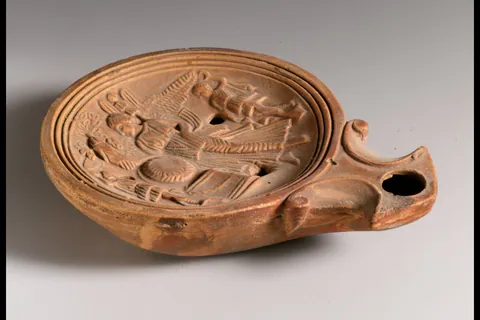
Palavra
A Bíblia não promete iluminar a estrada inteira de uma vez. Ela ilumina o próximo passo, e isso já é muito.
12 de out. de 2026 · 2 min de leitura
Fé
Há dias em que a gente ora e o vento continua forte. Uma noite no mar da Galileia mostra onde fica a nossa paz.
5 de out. de 2026 · 2 min de leitura
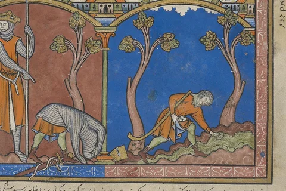
Antigo Testamento Em breve
Diante de um gigante, Davi aprendeu a confiar em Deus. Uma história para lembrar onde está a nossa coragem.
1 Samuel 17
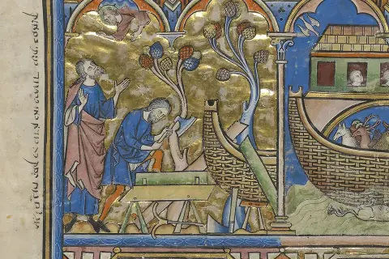
Antigo Testamento Em breve
Noé construiu a arca enquanto esperava. Uma reflexão sobre confiança, cuidado e as promessas de Deus.
Gênesis 6 a 9
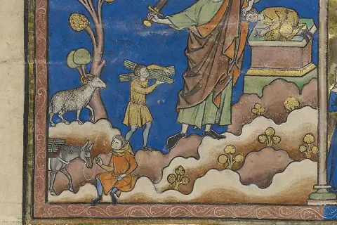
Fé Em breve
Abraão saiu sem conhecer o destino. A fé também pode começar com um passo pequeno e um coração disposto.
Gênesis 12
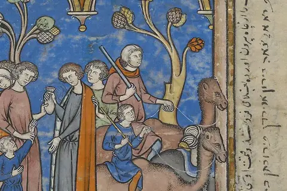
Antigo Testamento Em breve
A história de José passa pela dor e chega ao reencontro. Um convite para pensar no perdão sem apagar o que aconteceu.
Gênesis 37 a 50
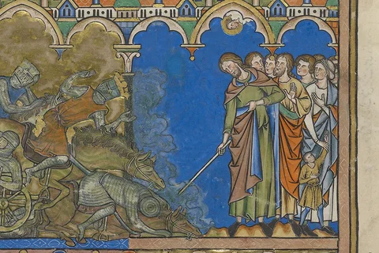
Fé Em breve
Entre o medo e o mar, o povo deu o próximo passo. Uma lembrança de que Deus cuida mesmo quando não vemos saída.
Êxodo 14
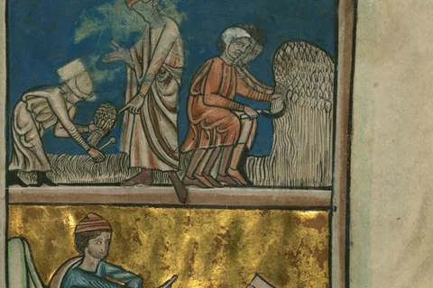
Amor ao próximo Em breve
Rute escolheu ficar ao lado de Noemi. Sua lealdade mostra como o amor pode abrir caminhos em dias difíceis.
Rute 1 a 4
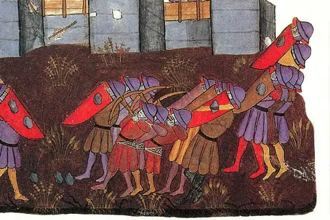
Chamado Em breve
Neemias viu ruínas e começou com oração. Uma história sobre reconstruir juntos e cuidar do que Deus nos confiou.
Neemias 1 a 6
Palavra Em breve
Cansado e com medo, Elias precisou parar. Uma reflexão sobre escutar Deus também nos momentos de silêncio.
1 Reis 19
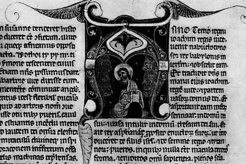
Fé Em breve
Daniel continuou a orar quando parecia arriscado. Uma história para fortalecer a fidelidade nas escolhas de cada dia.
Daniel 6
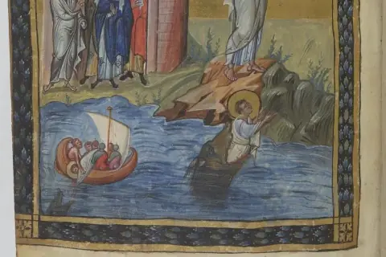
Chamado Em breve
Jonas tomou outro caminho, mas Deus não desistiu dele. Uma reflexão sobre recomeço, obediência e misericórdia.
Jonas 1 a 4